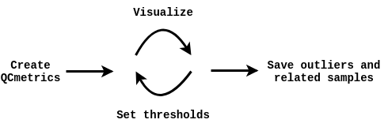

QCpG
QCpG : beta-version of the QCpG package for efficient and interactive quality control of Illumina 450k/EPIC DNA methylation array data. It includes a comprehensive set of sample- and probe quality control metrics,performs two types of principal components analysis (PCA) to summarize both biological and technical variation, detects sample mixups and infers relatedness between samples. Additionally, it includes DNA methylation based predictors of various traits and exposures such as smoking behavior, alcohol use and epigenetic age.
Usage
Here, we show the basic usage of the package. The main workflow of can be summarized as follows:

This package consists two main functions (corresponding to the first two steps of the workflow): getQCmetrics() and QCapp():
getQCmetrics(): Create aQCmetricsobject that contains summarized QC metrics, sample and probe outliers, relatedness info and several predicted phenotypes (termed poly-methylation scores (PMS) here). The only input needed is a samplesheet containing the paths of the IDAT-files. Many more optional parameters can be specified (seevignette("AdvancedOptions")), for example: a genotype matrix can be supplied to assess DNAm-genotype concordance. This function will return an object of theQCmetricsclass, which can be explored interactively using theQCapp()method.QCapp(): Visualize aQCmetricsobject (obtained with thegetQCmetrics()function). This function launches a app in which the user can interactively explore the quality control metrics, set thresholds and define sample/probe outliers to be removed in subsequent analyses. In addition, relatedness among samples can be explored and several phenotypes/traits are included (age, sex, cell type fractions, smoking status, alcohol, and BMI). For comparison, otherQCmetricsobjects can be visualized in the background. When appropriate thresholds have been chosen, an updated QCmetrics object can be saved that contains the updated thresholds and outliers.
We intend to share the Project MinE QCmetrics objects (±10,000 samples), that can be used as a reference. Below we put the above in practice using example data.
Get started! vignette("GettingStarted")